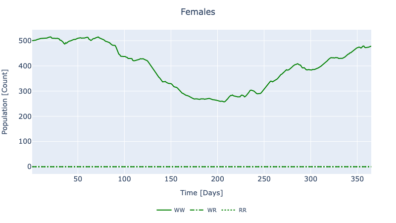

Decision Model
The following shows how to build and solve optimization problems in GeneDrive.jl. Decision models allow us to determine the best (optimal) strategy for achieving a goal (objective), taking into account the limitations (constraints) of our system of interest.
To set up the decision model, it is necessary to define an additional component for our data model: our problem's operational limitations (constraints). Operational constraints enter the simulation as fields of the ReleaseStrategy struct and are defined per node. View struct fields by running:
julia> ? ReleaseStrategyBiological constraints are pre-defined within the decision model. For brevity, we will specify our example operational constraints on top of the node3 data model created previously.
# Define constraints using desired fields (re-use `release_genotype`)
example3 = ReleaseStrategy(
release_this_gene_index = release_genotype,
release_this_life_stage = Male,
release_start_time = 7,
release_size_max_per_timestep = 1000
);
# Assign constraints
my_org_strat = [1 => example3]
my_node_strat = NodeStrategy(1, my_org_strat)
my_node_species = [species]
# Build the optimization problem (re-use `node3`, `tspan`)
prob = create_decision_model(
node3,
tspan;
node_strategy = my_node_strat,
node_species = my_node_species
);A JuMP Model
├ solver: Ipopt
├ objective_sense: FEASIBILITY_SENSE
├ num_variables: 16790
├ num_constraints: 32480
│ ├ JuMP.AffExpr in MOI.EqualTo{Float64}: 5475
│ ├ JuMP.AffExpr in MOI.GreaterThan{Float64}: 1095
│ ├ JuMP.AffExpr in MOI.LessThan{Float64}: 2191
│ ├ JuMP.QuadExpr in MOI.EqualTo{Float64}: 3285
│ ├ JuMP.VariableRef in MOI.EqualTo{Float64}: 3291
│ ├ JuMP.VariableRef in MOI.GreaterThan{Float64}: 13499
│ ├ JuMP.VariableRef in MOI.LessThan{Float64}: 359
│ └ Nonlinear: 3285
└ Names registered in the model
└ :E, :E_con_A0, :E_con_A1, :E_con_B0, :E_con_B1, :F, :F_con_0, :F_con_1, :L, :L_con_A0, :L_con_A1, :L_con_B0, :L_con_B1, :M, :M_con_0, :M_con_1, :P, :P_con_A0, :P_con_A1, :P_con_B0, :P_con_B1, :Sets, :control_F, :control_M, :control_equivalence, :control_limit_schedule_lower_F, :control_limit_schedule_lower_M, :control_limit_schedule_upper_F, :control_limit_schedule_upper_M, :control_limit_total_F, :control_limit_total_M, :mate_bound, :migration_E, :migration_L, :migration_M, :migration_P, :release_locationTo solve the decision model as an optimization, a goal (objective) must be supplied. However, even in the absence of an objective function we can derive useful information: without an objective, the solution method auto-selected by GeneDrive.jl acts as a nonlinear solver and allows us to compare the behavior of our dynamic and decision models.
# Solve
sol = solve_decision_model(prob);
# Format all results for analysis
results = format_decision_model_results(sol);Dict{Any, Any} with 8 entries:
:node_1_scenario_1_organism_1_P => 365×3 DataFrame…
:node_1_scenario_1_organism_1_E => 365×3 DataFrame…
:node_1_scenario_1_organism_1_F => 365×3 DataFrame…
:node_1_scenario_1_organism_1_M => 365×3 DataFrame…
:node_1_scenario_1_organism_1_L => 365×3 DataFrame…
:node_1_organism_1_control_M => 365×3 DataFrame…
:Time => [1, 2, 3, 4, 5, 6, 7, 8, 9, 10 … 356, 35…
:node_1_organism_1_control_F => 365×3 DataFrame…To visualize a subset of the results, run plot_decision_ridl_females(sol). Because no objective function was specified, this output should qualitatively match those from the dynamic model when no intervention is conducted (i.e. when using the same data model, and no RIDL release object is passed to solve_dynamic_model). Therefore it should look as follows:
